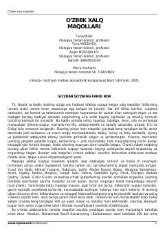

OXO'zbek xalqining donishmandligini aks ettiruvchi minglab maqollar to'plami.
Bu to'plam o'zbek xalq maqollarini keng kitobxonlar ommasiga taqdim etish maqsadida tuzilgan bo'lib, folklorshunoslik sohasidagi boy tajriba asosida hozirgacha mavjud materiallarni to'laroq qamrab olishga harakat qilingan. To'plamda o'zbek xalqining ko'p asrlik hayotiy tajribalari, turmush tarzi va falsafiy qarashlari aks etgan minglab maqollar jamlangan. Uni filologiya fanlari doktorlari To'ra Mirzayev, Asqar Musoqulov va Bahodir Sarimsoqov tuzgan, 2005-yilda «Sharq» nashriyotida chop etilgan.